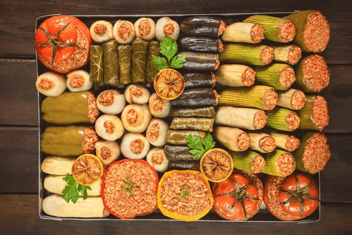

Home
Mahshi 🥬

Mahshi is a traditional Egyptian dish made by stuffing vegetables like zucchini, peppers, and eggplant with a rice and herb mixture.
Ingredients 📝
- 4 zucchinis
- 4 bell peppers
- 1 cup rice
- 1 chopped onion
- Chopped parsley, dill, coriander
- 2 tbsp tomato paste
- Salt, pepper, and spices
Instructions 👩🍳
- Hollow out the vegetables.
- Mix rice, herbs, tomato paste, and spices.
- Stuff each vegetable with the mixture.
- Arrange in a pot and add tomato sauce or broth.
- Simmer for 45–60 minutes until cooked.